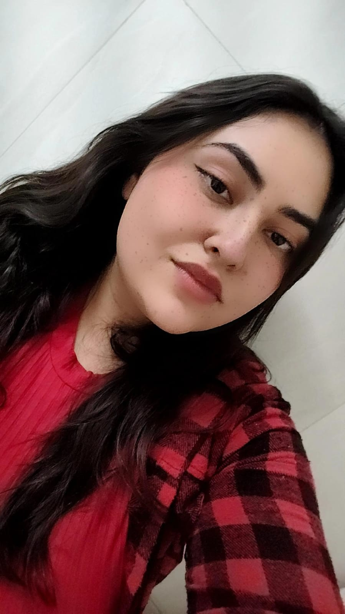
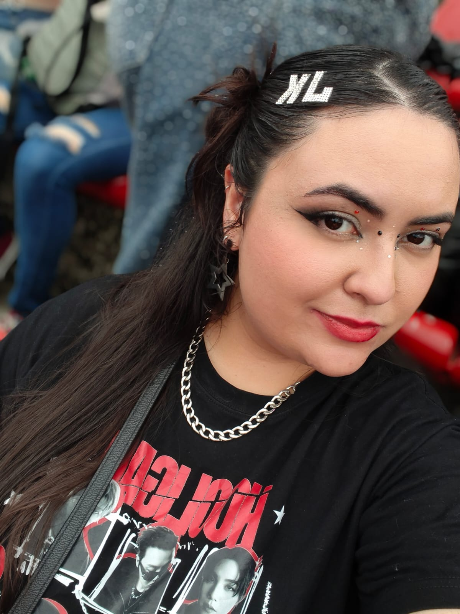
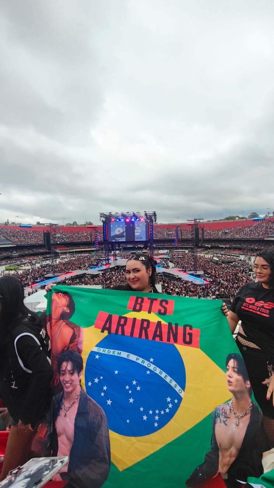
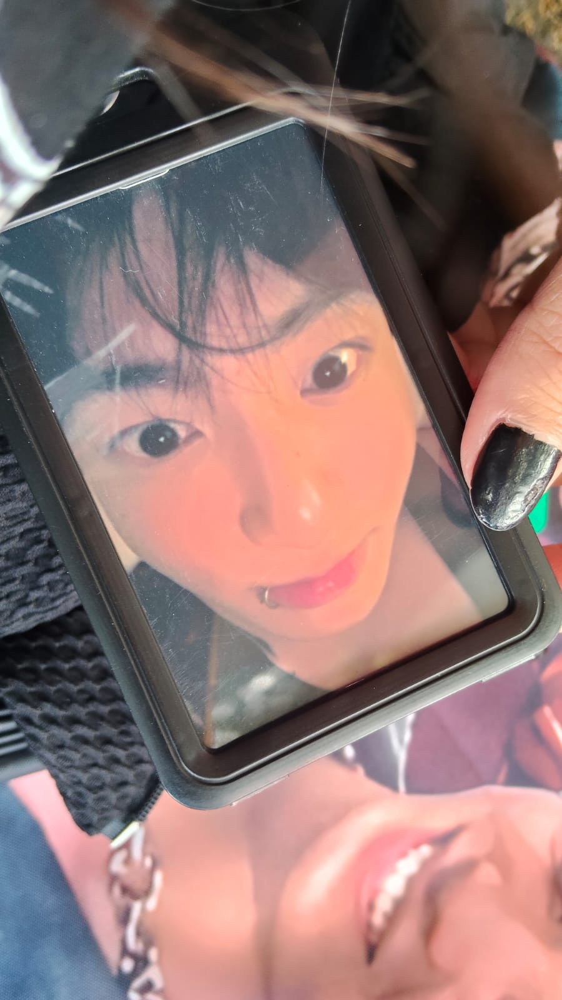
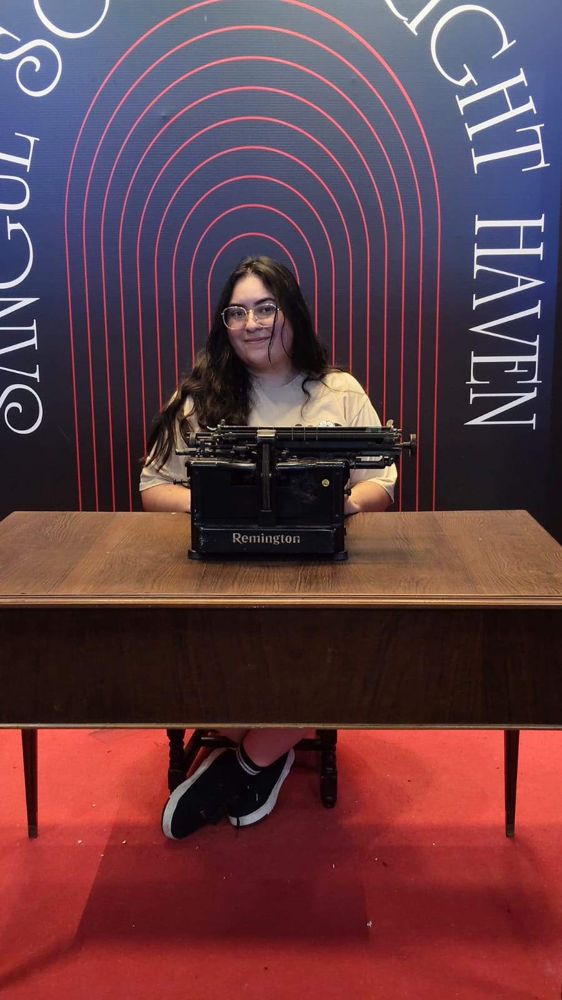

Cotidiano
Um pequeno registro do meu cotidiano, longe dos códigos e das páginas dos livros.
Este é meu álbum de lembranças: registros de shows, exposições e passeios que reúnem algumas das coisas que mais gosto. Ainda quero viajar o mundo e preencher estas páginas com novas descobertas.


Um pequeno registro do meu cotidiano, longe dos códigos e das páginas dos livros.

Um registro da produção para o show do BTS, ali era a Letícia de 10 anos que estava realizando um sonho e confesso que chorei horrores com isso, de fato é um sentimento estar em um lugar onde você se entende com varias pessoas e principalmente, realizando um sonho.

Uma lembrança do show do BTS, com a bandeira brasileira que eu apelidei de "Bandeira do Jungkook pelado" e o estádio ao fundo.

Desde 2013, o K-pop faz parte da minha vida. Até os pequenos detalhes, como um photocard, representam o carinho que tenho pela música e pelas lembranças que coleciono ao longo dos anos.

Na Bienal do Livro, um registro diante de uma máquina de escrever, em meio a um passeio BEM CAÓTICO na minha primeira Bienal do Livro! na próxima eu quero muito ir, porém como influencer ou até mesmo escritora.
Na exposição do Pequeno Príncipe, entre estrelas, cores e a famosa rosa da história.